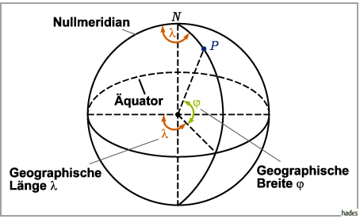
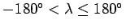
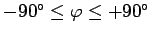

Geographische Koordinaten
Zur Bestimmung von Punkten P auf der Erdoberfläche werden geographische Koordinaten benutzt, d.h. Kugelkoordinaten mit dem Radius der Erdkugel, der geographischen Länge  und der geographischen Breite
und der geographischen Breite  .
.

- Längengradeinteilung:
- Zur Längengradzählung ist die Erdoberfläche in halbe, vom Nordpol zum Südpol verlaufende Großkreise, die Meridiane, eingeteilt. Der Nullmeridian verläuft durch die Sternwarte Greenwich. Von ihm aus erfolgt die Zählung mit Hilfe von 180 ganzzahligen Meridianen östlicher Länge (ö. L.) und 180 ganzzahligen Meridianen westlicher Länge (w. L.), die am Äquator einen gegenseitigen Abstand von 111 km haben. Östliche Längen werden positiv, westliche Längen negativ angegeben. Somit gilt .
- Breitengradeinteilung:
- Zur Breitengradzählung ist die Erdoberfläche in parallel zum Äquator verlaufende Kleinkreise, die Breitengrade, eingeteilt. Vom Äquator aus, einem Großkreis, zählt man 90 ganzzahlige Breitengrade nördlicher Breite (n. Br.) und 90 südlicher Breite (s. Br.). Nördliche Breiten werden positiv, südliche Breiten negativ angegeben. Somit gilt .